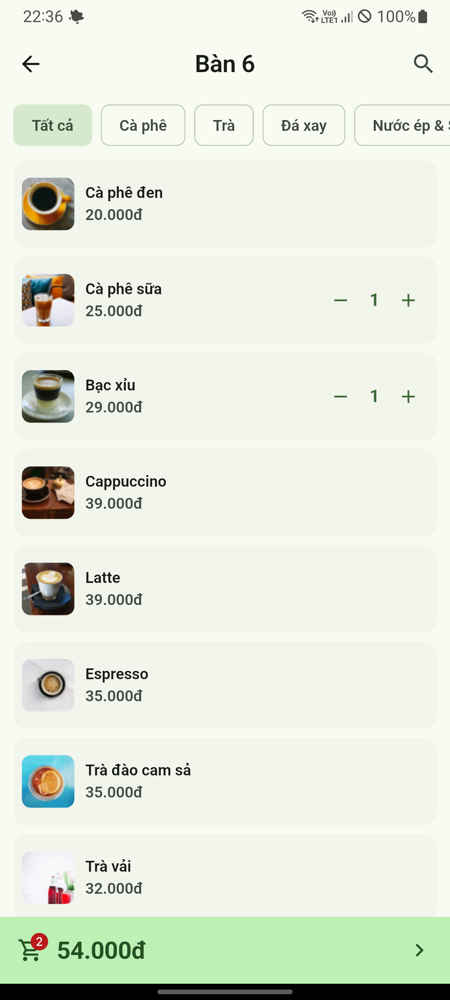
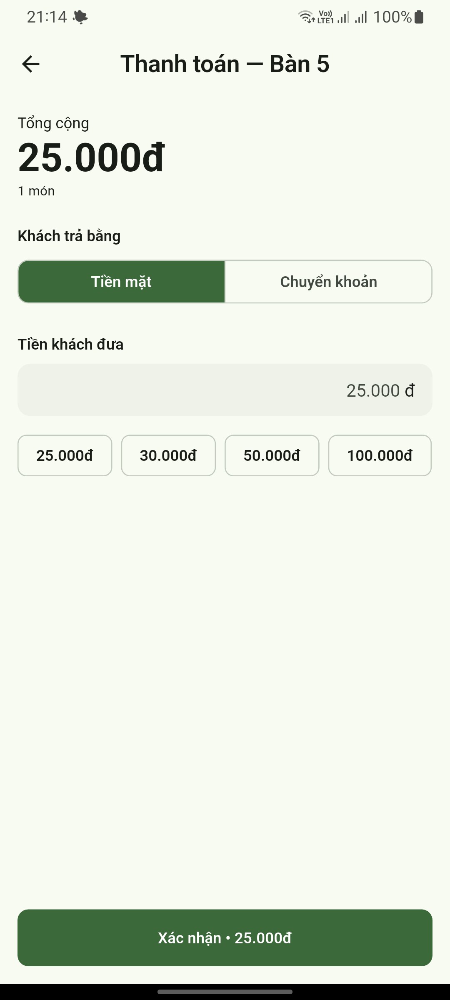
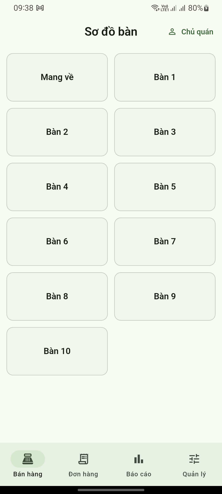
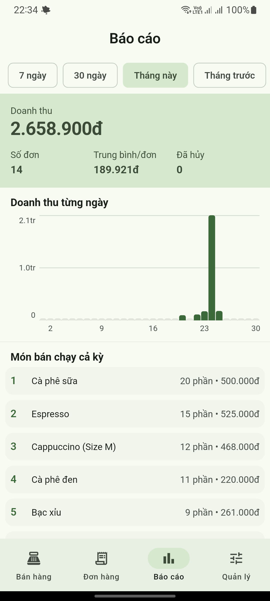

Máy bán hàng, màn hình bếp, web order, báo cáo từ xa. Mất mạng vẫn bán được.
Không phải năm phần mềm rời rạc của năm nhà khác nhau.
Sơ đồ bàn, gọi món, in bill, thu tiền — máy nào cũng cùng một sổ.
Món gọi xong hiện ngay chỗ pha chế, khỏi hô miệng giữa lúc đông.
Khách quét mã là tự gọi món. Đơn vào thẳng quầy và bếp, không gõ lại.
Đang ở nhà vẫn xem được doanh thu hôm nay và món nào bán chạy.
Mỗi quán một sổ riêng, cùng một tài khoản. Mở quán thứ hai là thêm vào.
Mỗi người một mã PIN. Hủy đơn, giảm giá đều ghi lại ai làm.
Quầy một máy POS, chạy bàn một máy cầm tay, chủ quán xem số trên điện thoại riêng. Cùng một menu, cùng một sổ.
Máy POS ở quầy
Màn cảm ứng, in bill ngay tại quầy
Doanh thu tháng này
2.658.900đ
Trang web xem báo cáo
Mở bằng máy nào cũng được, không cần cài
Tablet
Sơ đồ bàn rộng, dễ bấm

Điện thoại
Máy bạn đang có là bán được

Máy cầm tay
Chạy bàn, in bill ngay tại chỗ
Quán đang đông, khách đứng chờ lấy đồ, mà mạng chập chờn — đó đúng là lúc một cái máy bán hàng cần mạng trở thành vô dụng.
PY POS lưu mọi thứ ngay trong điện thoại. Không mạng thì vẫn tính tiền, vẫn in bill, vẫn trừ kho như bình thường. Có mạng thì đơn tự gửi lên để bạn xem báo cáo từ nhà.
Không phải kiểu "dùng tạm khi mất mạng". Offline là cách nó chạy bình thường.
Chỗ duy nhất cần mạng là lúc đăng nhập lần đầu trên một máy mới — đúng một lần, rồi bán cả ngày không cần gì thêm.
Thứ nhân viên bấm cả ngày, nên bấm phải nhanh.
Nhìn là biết bàn nào có khách, bàn nào đã gọi món.
Khai một lần: size nào giá nào, thêm trân châu cộng bao nhiêu.
Bill cho khách, tem dán ly cho pha chế — cùng một lần bấm.
Khách đưa tờ 500 nghìn, bấm một cái là xong, khỏi tính nhẩm.
Ba việc khác nhau, vào báo cáo theo ba cách khác nhau.
Quán thay ca thì mở ca, đếm tiền đối chiếu. Không cần thì tắt.
Ảnh chụp thật từ app đang chạy.


Thứ bạn mở ra mỗi tối, hoặc mỗi tuần một lần.
Khai công thức một lần, bán xong app tự trừ, sắp hết thì báo.
Hủy đơn, sửa đơn đã thu tiền, giảm giá — ghi lại tên người làm.
Nhân viên bán bình thường nhưng không thấy doanh thu, không sửa giá.
Sửa giá một chỗ là quầy, bếp và web order đổi theo.
Doanh thu từng ngày, lịch sử ca — xuất CSV cho kế toán.
Hàng tặng, món hủy, tiền hoàn — gom riêng để biết thất thoát ở đâu.
Ba kiểu quán, ba gói. Nhận ra mình ở đâu rồi nhảy thẳng xuống gói tương ứng, không phải đọc hết bảng giá.
Cà phê take-away, xe nước, quán một quầy. Một máy là đủ, không cần chia ca, không cần phân quyền.
Cà phê có bàn, trà sữa, quán ăn sáng với 2–5 nhân viên và một góc bar hoặc bếp. Cần nhiều máy bán cùng lúc và cần chốt ca.
Đã mở chi nhánh thứ hai, hoặc muốn khách tự gọi món qua web. Cần một chỗ xem số của cả mấy quán cùng lúc.
Ảnh minh họa. Đang chạy ở những kiểu quán này:
Trả một lần, dùng mãi. Không phí hàng tháng, không phí theo đơn, không ăn phần trăm doanh thu.
Quán một mình chủ bán
7.000.000đ · trả một lần
Quán chọn nhiều nhất
Quán 2–5 nhân viên, có bếp
12.000.000đ · trả một lần
Từ hai quán trở lên
Liên hệ tư vấn
Từ gói Quán trở lên có thêm phân quyền nhân viên và truy vết ai sửa gì. Giá trên là phần mềm — máy in, tablet, màn hình bếp thì bạn mua ngoài, loại phổ thông nào cũng chạy, không bắt mua thiết bị của riêng ai.
Không cần ai tới lắp đặt, không cần khóa học.
Một cái điện thoại Android là đủ. Đăng ký bằng số của bạn, đặt tên quán và mã PIN chủ quán — xong là bán được.
App có sẵn menu quán cà phê: cà phê sữa, bạc xỉu, trà đào… Sửa giá và xóa món không bán, nhanh hơn là nhập từ số không.
Bán cả ngày không cần mạng. Có mạng thì đơn tự gửi lên, tối mở trang báo cáo trên điện thoại riêng là thấy số.
Mấy câu chủ quán hỏi đầu tiên.
Được, và đó là điểm chính của app. Mọi thứ lưu ngay trong điện thoại: tính tiền, thối tiền, trừ kho, xem lại đơn cũ đều chạy bình thường khi không có mạng. Có mạng trở lại thì đơn tự gửi lên, bạn không phải bấm gì.
Không bắt buộc. Một điện thoại Android là đủ mở quán; quán rộng hơn thì chạy thêm trên tablet, máy POS hay máy tính — cùng một quán, cùng một sổ. Muốn in bill thì thêm máy in nhiệt 58mm nối Bluetooth, loại phổ biến giá vài trăm nghìn. Không bắt mua thiết bị của riêng ai.
Không mất. Dữ liệu quán gắn với tài khoản của bạn, không gắn với cái máy — máy mới cài app, đăng nhập lại bằng số điện thoại là đơn, menu, kho, nhân viên về đủ.
Không. Trả một lần, dùng mãi — không phí tháng, không phí theo đơn, không ăn phần trăm doanh thu. Quán bán được nhiều hơn thì đó là tiền của bạn, không phải phần chia thêm cho phần mềm.
Không, và chúng tôi nói trước để bạn không phải đoán. Mấy việc đó dính tới pháp lý và thay đổi theo quy định, nên chúng tôi không nhận — bạn dùng dịch vụ hóa đơn điện tử riêng. PY POS lo phần bán hàng ở quầy, bếp, kho và báo cáo. Số liệu xuất được ra CSV để đưa cho kế toán.
Có, và chỉ cần số điện thoại của bạn với một mật khẩu — không cần email. Tài khoản là chỗ giữ dữ liệu của quán: nhờ nó mà đổi máy không mất gì, xem được báo cáo từ điện thoại riêng, và mở quán thứ hai không phải làm lại từ đầu.
Không, nếu bạn không muốn. Mỗi người một mã PIN riêng; tài khoản nhân viên bán hàng bình thường nhưng không vào được báo cáo và không sửa được giá món. Hủy đơn hay giảm giá đều ghi lại tên người làm.
Trên chính điện thoại bán hàng, hoặc mở trang báo cáo bằng điện thoại riêng của bạn — không cần cài thêm gì, đăng nhập bằng tài khoản quán là thấy số.
Toàn bộ app là tiếng Việt, làm riêng cho quán ở Việt Nam. Tiền tính bằng đồng, không có phần thập phân lẻ.
Nhắn Zalo để nhận bản dùng thử. Nói qua về quán của bạn — mấy máy, có bếp hay không, một quán hay nhiều quán — rồi tôi báo đúng gói và cách bắt đầu.
Nhắn Zalo 0934 773 909Hoặc tải app trên Google Play để xem thử trước.